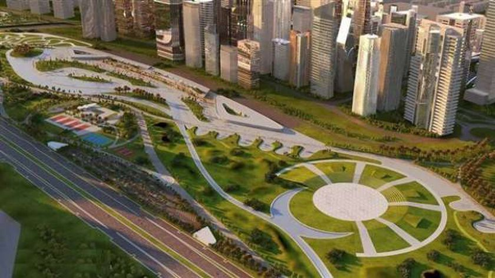

المونوريل هو وسيلة نقل جماعي كثيفة أحادي السكة ويسير على كمرة خرسانية معلقة
تبلغ السعة القصوى للمونوريل الحديث حوالى مليون راكب يومياً
الهدف منه تعظيم منظومة النقل الجماعى على مستوى الجمهورية بما فيها المدن الجديدة
سيجرى إدخاله فى مصر لأول مرة وسيمثل نقلة وتحولا كبيرا في وسائل المواصلات
هذه النوعية من المواصلات تتسم بأنها وسائل نقل سريعة وعصرية وآمنة وصديقة للبيئة
توفر استهلاك الوقود وتخفض معدلات التلوث البيئي وتخفف الاختناقات المرورية بالمحاور والشوارع
الرئيسية
ربط محافظة القاهرة من محطة الاستاد بالخط الثالث لمترو الأنفاق بشارع صلاح سالم بكل من القاهرة الجديدة والعاصمة الإدارية الجديدة بطول 54 كيلو وعدد (21) محطة
نقل حركة الموظفين والمترددين من القاهرة والجيزة في أقل زمن رحلة لاتصاله بالخط الثالث لمترو الأنفاق
يهدف خط مونوريل 6 أكتوبر إلى ربط محافظة الجيزة بداية من محطة جامعة الدول بالخط الثالث لمترو
الأنفاق بمدن السادس من أكتوبر والشيخ زايد والتوسعات الجديدة بمدينة السادس من أكتوبر
يبدأ مونوريل العاصمة الإدارية الجديدة من مدينة نصر إلى العاصمة الإدارية الجديدة بطول 53 كيلومترا
مونوريل 6 أكتوبر يبدأ من الجيزة إلى مدينة 6 أكتوبر بطول نحو 42 كيلو
خط قطار مونوريل السادس من أكتوبر يتكون من 12 محطة هي بولاق (جامعة الدول) – الطريق الدائري –
المريوطية – المنصورية- الطريق الصحراوي( القاهرة /الاسكندرية )- هايبر وان – جهينة- هيئة المجتمعات
العمرانية - الحصري – دار الفؤاد – المنطقة الصناعية – القطار السريع
يخدم قطار مونوريل 6 أكتوبر التوسعات الكبيرة بمدينة 6 أكتوبر وخاصة مشروعات الإسكان الاجتماعى
مدة تنفيذ مونوريل العاصمة الإدارية سيستغرق 34 شهرا بدءا من أول أغسطس الجارى
يستغرق تنفيذ مونوريل 6 أكتوبر 42 شهرا
سيتم بداية من يناير القادم تنفيذ مونوريل 6 أكتوبر